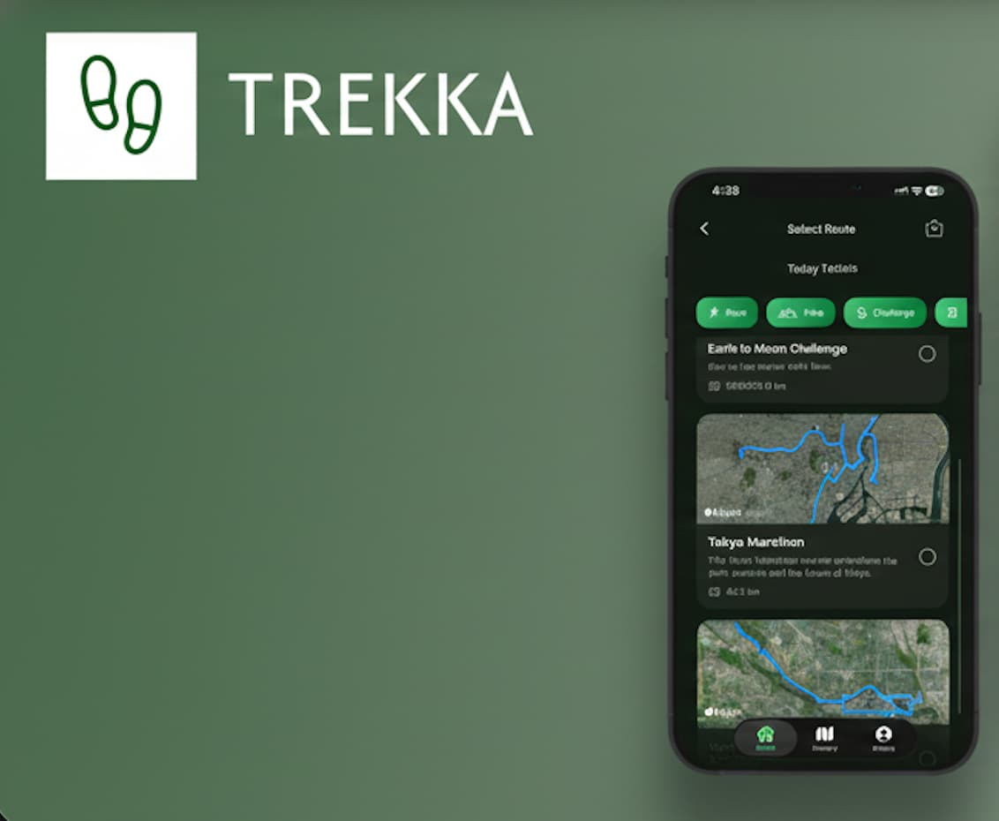

Trekka
A production‑minded iOS fitness app focused on turning everyday movement into structured, usable routes. Built end‑to‑end with a focus on performance, battery efficiency, and scalability.
 Swift
Swift
 .NET
.NET
 PostgreSQL
PostgreSQL
Project Overview
This project is a production‑minded iOS fitness app focused on turning everyday movement into structured, usable routes. The core problem it addresses is that most step‑ or activity‑tracking apps either overwhelm users with raw data or lock meaningful insights behind proprietary ecosystems. My goal was to build a clean, fast, and extensible app that encourages walking and running through curated routes while remaining technically robust and scalable.
The app allows users to browse predefined routes, view them on a map, and track progress as they move through the route in real time. Performance, payload size, and battery efficiency were key design constraints from the start, reflecting real‑world mobile conditions rather than idealized demos. The project was built end‑to‑end by me, covering iOS client development, backend API design, geospatial data handling, and deployment considerations.
This app also serves as a learning and proving ground for full‑stack mobile development: integrating native iOS frameworks, geospatial algorithms, and a cloud‑hosted .NET backend into a cohesive, shippable product.
Key Features
Users can browse a list of predefined walking and running routes, each with metadata such as distance, category, and description.
Routes are rendered using Apple MapKit with clear visual distinction between completed and remaining segments, supporting both light and dark mode.
As users move, their progress along the route is calculated using geospatial distance algorithms, enabling accurate distance tracking without excessive battery drain.
Route data is carefully structured to minimize download size, reducing initial payloads from hundreds of kilobytes to lightweight, mobile‑friendly responses.
Core route data is cached locally so users can continue tracking even with limited connectivity.
Routes are served from a centralized API, allowing new routes, categories, or user‑generated content to be added without app updates.
Technology Stack
Frontend - iOS Native
Swift: The app is built entirely in Swift, leveraging native iOS frameworks for optimal performance and user experience. Swift's modern syntax and strong typing ensure a robust and maintainable codebase.
Backend - .NET
.NET Framework: The backend API is built using .NET, providing a robust and scalable server-side solution. The API handles user authentication, progress tracking, route management, and data synchronization.
Database - PostgreSQL
PostgreSQL: A relational database system storing user data, journey progress, route information, and achievements. PostGIS is used for geospatial data handling.
Architecture
Trekka follows a client-server architecture where the iOS app communicates with a .NET backend API. The backend manages all business logic, data persistence, and route calculations, while the iOS app focuses on providing an excellent user experience and seamless step tracking integration.
The app integrates with iOS HealthKit to access step count data, ensuring accurate tracking without requiring additional hardware or permissions beyond standard health data access.